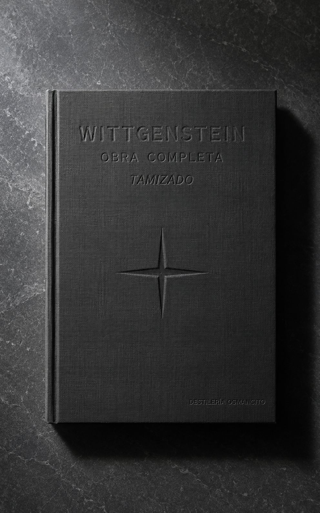
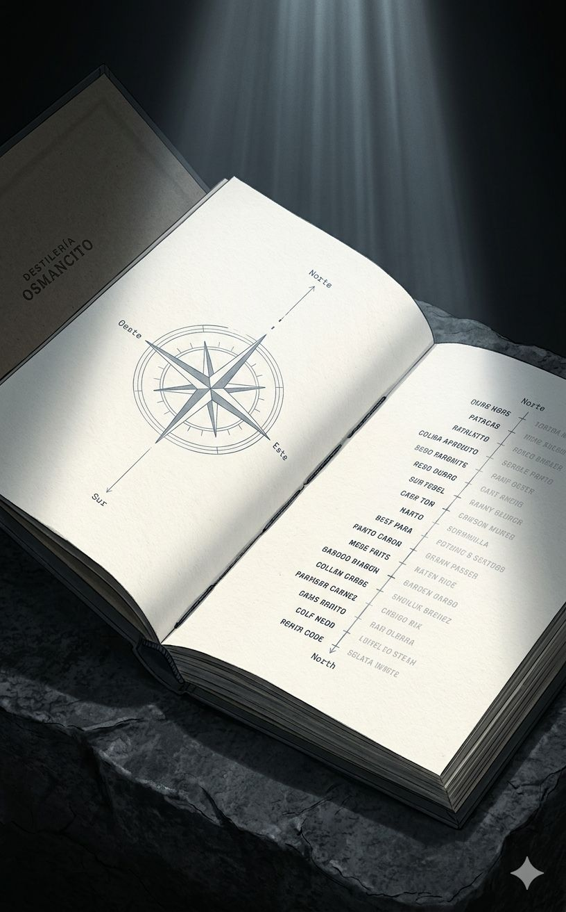
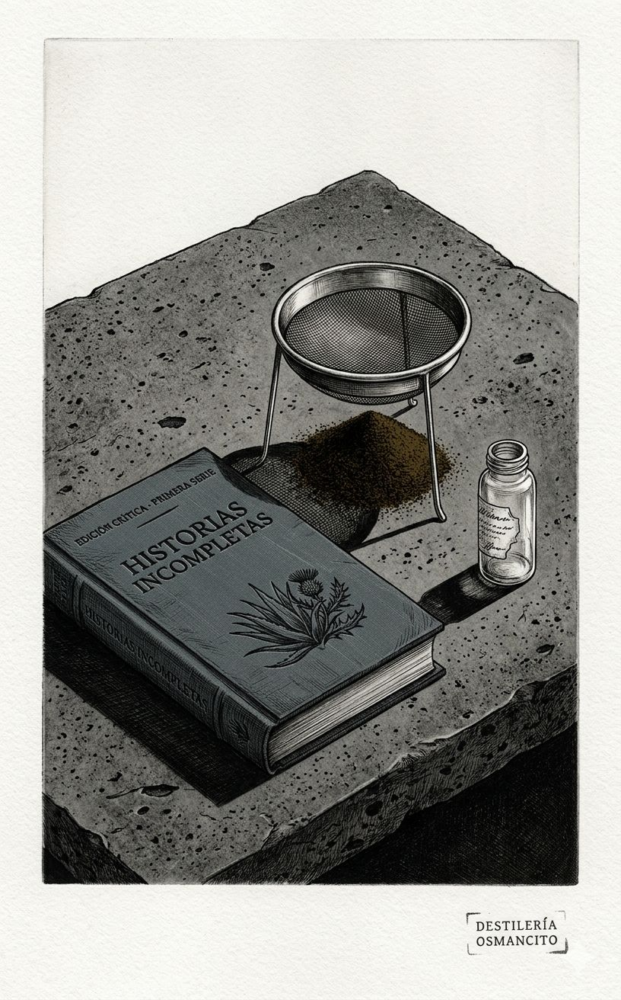
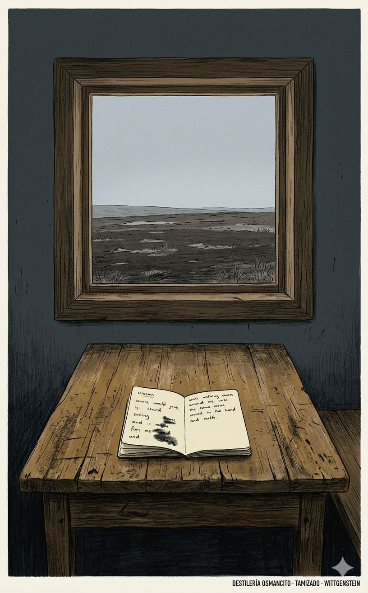
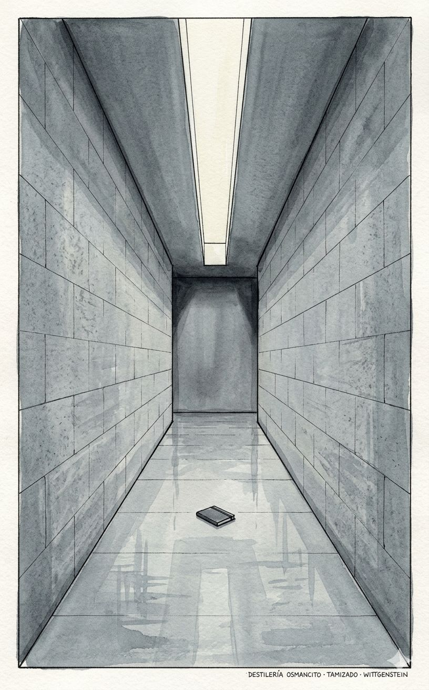
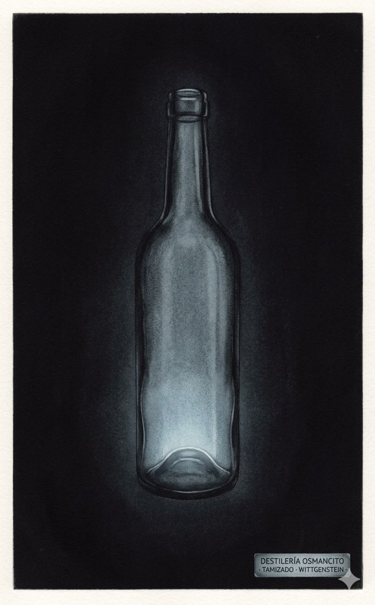
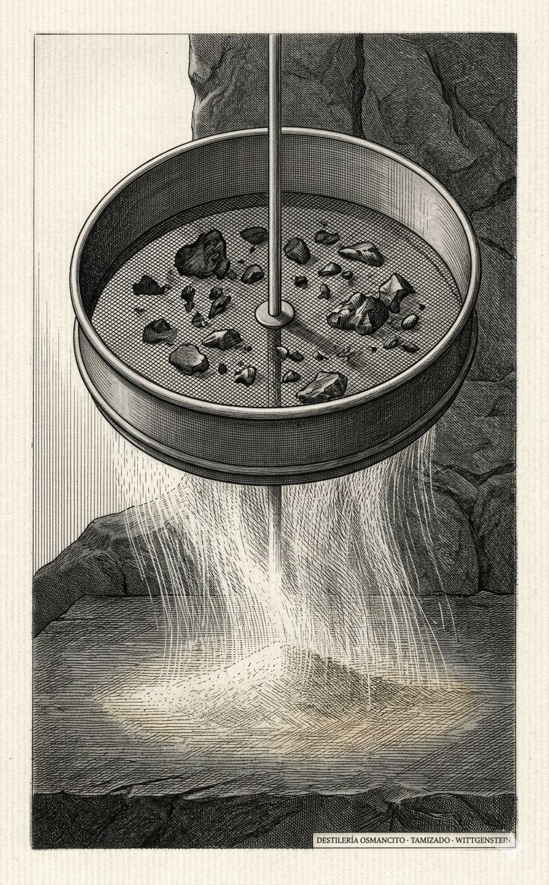
La cata tiene un resultado que no se predecía: las obras más cercanas al norte de Wittgenstein son las que entregó sin terminar. El Tractatus —el texto más citado, el más traducido, el que fundó una escuela— llega al norte desde el este: construyendo el sistema más perfecto de la filosofía analítica para demostrar que los sistemas no sirven. Las Observaciones sobre La rama dorada de Frazer, veinte páginas que casi nadie lee, contiene una de las expresiones más puras de su método. Lo que el conjunto revela: en Wittgenstein, el pulido es casi siempre la señal de que algo se ha traicionado.
El valor que Wittgenstein defiende cuando es más honesto consigo mismo es la detención precisa: la capacidad de parar donde el pensamiento no puede avanzar sin disfrazarlo de otra cosa. No la humildad —eso sería moral. La precisión: reconocer el límite del lenguaje como el límite de lo que puede decirse, y no cruzarlo. Su proyecto filosófico entero es una práctica de esa detención: disolver los problemas en lugar de resolverlos, mostrar al lector la salida del laberinto en vez de construir otro laberinto más elegante.
NORTE ↑: La detención precisa ante el límite: el rigor de parar donde el pensamiento no puede avanzar sin mentirse; disolver en lugar de resolver.
ESTE →: El sistema; la arquitectura conceptual que promete más de lo que puede dar; la teoría unificada como sustituto de la honestidad.
SUR ↓: La repetición de ejemplos sin que la tensión avance; el método terapéutico convertido en hábito en lugar de acto; la filosofía que se confirma a sí misma.
OESTE ←: El aforismo que simula profundidad sin encontrarla; la oscuridad sin sustento; la voz personal que se desliza fuera del método sin que el método lo aguante.
Muestra: Grano en remojo
Posición en el eje: Pre-norte. El norte no está declarado todavía: se busca, en condiciones de guerra real.
Notas de campaña en el frente del Este, escritas mientras se gestaba el Tractatus. Lógica, ética y mística coexisten sin jerarquía: el pensamiento no ha encontrado su forma pero ya sabe que necesita una. La urgencia de la guerra y la urgencia filosófica se mezclan sin que ninguna disminuya a la otra.
La intimidad de un pensamiento en su forma más vulnerable; no es el Tractatus, pero sin estos cuadernos el Tractatus sería incomprensible y él habría sido imposible.
Muestra: Cristal absoluto
Posición en el eje: Al norte —llegando desde el este. Alcanza el norte por el camino que luego repudiará.
Siete proposiciones numeradas en descenso hacia el silencio. Construye la teoría pictórica del lenguaje —la proposición como imagen del hecho— con la arquitectura más precisa que la filosofía analítica ha producido, y al final declara que el sistema mismo carece de sentido: las proposiciones son una escalera que debe arrojarse una vez subida. El paradojo no es un error: es el resultado.
El único libro de filosofía que declara su propia nulidad como condición de su éxito; llega al norte desde el este y por eso es, simultáneamente, el máximo logro y el máximo error de su autor —y ambas cosas son inseparables.
Muestra: Primer destello
Posición en el eje: Norte, sin pulir. La valentía no está mediada por el método.
La única conferencia pública de Wittgenstein sobre un tema no técnico. Habla de la ética —de lo que el valor y el significado podrían querer decir— sabiendo desde el comienzo que el lenguaje no puede decirlo. Declara el fracaso por adelantado y continúa de todas formas: eso es lo que la hace irresistible.
Habla en público sobre lo que había declarado inefable, y esa contradicción asumida con plena consciencia hace de estas páginas el documento más honesto de toda la obra.
Muestra: Piel que se abandona
Posición en el eje: Zona media, entre el Tractatus y el método maduro. Norte en potencia.
Escrito justo después del regreso a Cambridge, cuando el Tractatus ya no servía pero las Investigaciones todavía no existían. El pensamiento soltando una piel sin haber encontrado la siguiente: más fuerza que la Gramática filosófica, menos certeza que los Cuadernos azul y marrón. La transición tiene su propia dignidad.
Su valor es para quien quiere seguir la evolución; como corpus autónomo no alcanza a pararse solo, y el alambique lo sabe.
Muestra: Mosto joven
Posición en el eje: En tránsito hacia el norte. El método se está forjando en tiempo real.
Dictados a estudiantes como laboratorio del nuevo método. Más directos, más lentos, menos pulidos que las Investigaciones: el pensamiento se ve trabajar. El cuaderno azul propone los juegos de lenguaje; el marrón los aplica. La forma es provisional pero la dirección ya es exacta.
Lectura indispensable para quien quiere ver el alambique encendido antes de que el destilado esté listo; el mérito es genético y pedagógico, no autónomo.
Muestra: Barrica sin abrir
Posición en el eje: Zona media. Norte en potencia, no en acto. La bodega, no el producto.
El texto más largo de Wittgenstein: más de 700 páginas que preceden y alimentan tanto la Gramática filosófica como los Cuadernos azul y marrón. El pensamiento todavía no ha encontrado su forma definitiva; el material está todo, pero la presión que lo convertiría en destilado no se ha aplicado todavía.
Fundamental para el archivo; no para el alambique: contiene casi todo lo que llegará a sus textos maduros en estado bruto, y ese es exactamente su valor y su límite.
Muestra: Bagazo útil
Posición en el eje: Zona media, inclinada al sur por acumulación y edición ajena.
Material de transición organizado y editado por Rush Rhees. Larga, repetitiva en partes, con secciones de primera categoría sepultadas bajo material que no alcanzó la misma temperatura. Contiene ideas que llegarán a las Investigaciones pero sin la presión que las hará necesarias.
Lectura especializada: quien quiere entender la cocina de las Investigaciones pasa por aquí; el alambique no la necesita, pero el archivista sí.
Muestra: Aguardiente de grano rudo
Posición en el eje: Norte en valentía y en intención, con resistencia interna del material.
Wittgenstein aplicando su método al terreno más hostil: las matemáticas, la prueba, la regla, la necesidad. Los matemáticos lo rechazaron —y en varios puntos probablemente tenían razón. Pero el gesto es honesto: atacar el territorio donde el método puede fallar en lugar de quedarse donde el método ya sabe ganar.
La honestidad de arriesgar el método en el terreno más adverso no cancela los errores que produce; solo alguien que no entendía el riesgo podría haberlo esquivado —y Wittgenstein lo entendía perfectamente.
Muestra: Destilado completo
Posición en el eje: Norte puro. El instrumento más afinado que produce.
Abandona la ilusión del sistema único y comienza a escuchar. Los juegos de lenguaje, las formas de vida, la familia de semejanzas, el seguimiento de reglas, el lenguaje privado: no son teorías sino instrumentos para ver. La estructura dialogada —objeciones que el propio texto responde— es la forma que el método requería. La única obra que se acerca a algo terminado.
La obra más honesta que la filosofía analítica ha producido: no resuelve los problemas filosóficos, los disuelve —y esa diferencia lo es todo.
Muestra: Destilado secundario
Posición en el eje: Zona media. Norte en intención, disperso en ejecución.
Dos volúmenes sobre sensación, intención, comprensión, imaginación, dolor. Material que en parte confluirá en las Investigaciones y en parte quedará sin integrar. Hallazgos reales distribuidos en una masa que no alcanzó la forma que hubiera necesitado para pararse sola.
El cuerpo es mayor que la tensión que lo sostiene; hay páginas que pertenecen al norte, pero el lector que llega sin orientación previa las pierde entre el material que no alcanzó esa temperatura.
Muestra: Fragmentos varios
Posición en el eje: Zona media. Cerca del norte, disperso.
Una caja de notas recortadas y guardadas por el propio Wittgenstein, sin organizar, editadas después de su muerte por Anscombe y von Wright. Más heterogénea que cualquier otro texto: hay entradas del Tractatus y del período más tardío en el mismo volumen. El conjunto no produce una dirección única.
Es el archivo de un taller, no el taller mismo: tiene destellos genuinos que pertenecen al norte, pero como objeto no puede pararse solo sin los textos que lo rodean.
Muestra: Añejamiento final
Posición en el eje: Norte. El texto más cerca de lo irreducible que produce en la última etapa.
Escrito durante los últimos dieciocho meses de vida, en tres cuadernos que entregó incompletos. Examina qué puede dudarse y qué no: la certeza no como conocimiento sino como forma de vida, como el suelo desde el que el juego del lenguaje puede comenzar. Los pensamientos llegan brevísimos, sin sistema, como sedimento de un proceso que lleva décadas.
El último trabajo de un hombre que sabía que se acababa el tiempo y tenía una sola pregunta más que hacerse; lo entregó sin terminarlo y así, sin quererlo, más honesto que si lo hubiera pulido.
Muestra: Infusión final
Posición en el eje: Norte, en territorio estrecho.
Escrito en paralelo con Sobre la certeza, en los últimos meses. Un examen minucioso de los conceptos de color: qué puede decirse del rojo opaco, del blanco brillante, de los colores que no existen en la sombra. Pequeño, preciso, sorprendente. El método aplicado a algo tan cotidiano que revela cuánto lenguaje hace trampa donde nadie lo nota.
Más pequeño que Sobre la certeza pero con la misma temperatura: el pensamiento en el borde de lo que puede decirse, sin tensión artificial, sin pretensión de sistema.
Muestra: Destilado extraño
Posición en el eje: Norte. Pequeño sin desperdicio.
Unas pocas páginas de comentarios sobre Frazer. Wittgenstein rechaza la explicación causal de los rituales primitivos: no hay que explicar por qué el rey era quemado, hay que ver que eso necesitaba hacerse. El método en estado puro: la comprensión como reconocimiento, no como teoría.
Veinte páginas que contienen tanta honestidad filosófica como libros enteros; si hubiera que elegir un solo texto secundario para el alambique, este.
Muestra: Aguardiente personal
Posición en el eje: Desvío al oeste. Ambición diferente, no siempre sostenida.
Aforismos sobre Beethoven, Mozart, Shakespeare, la arquitectura, la propia vida intelectual. El filósofo hablando de lo que ama, no de lo que analiza: el método queda suspendido y lo que aparece es el hombre. Eso lo hace valioso e insustituible para entender quién era Wittgenstein —y lo distingue de ser, en sí mismo, una obra filosófica.
El texto donde se ve al hombre detrás del método; eso lo hace imprescindible para leer la obra, aunque no sea parte de ella.
Muestra: Notas de estudiante
Posición en el eje: Oeste. La voz está mediada; el instrumento mide al intermediario.
Reconstruidas por estudiantes a partir de apuntes de clase. El método aparece, la dirección es reconocible, pero la distancia entre lo que Wittgenstein pensaba y lo que los estudiantes anotaron es una variable que el lector no puede controlar. Útil como introducción; no fiable como fuente.
El instrumento mide al intermediario tanto como al autor: hay más Wittgenstein en una página de las Investigaciones que en estas lecciones enteras.
La distribución revela lo que ninguna obra individual podía decir sola: el norte de Wittgenstein era estructuralmente incompatible con la terminación. Sus textos más cercanos al norte —Sobre la certeza, Observaciones sobre el color, La rama dorada— son los que entregó sin completar. El único que se acerca a algo terminado es las Investigaciones. El Tractatus, el más pulido de todos, llega al norte desde el este: por el camino que luego repudió y que, al repudiarlo, lo confirmó. Lo que el conjunto dice del autor que ninguna obra podría decir sola: la detención precisa ante el límite no era solo su método —era su condición; el pensamiento de Wittgenstein resistía convertirse en producto, y esa resistencia es, en sí misma, la marca más honesta de todo lo que produjo.
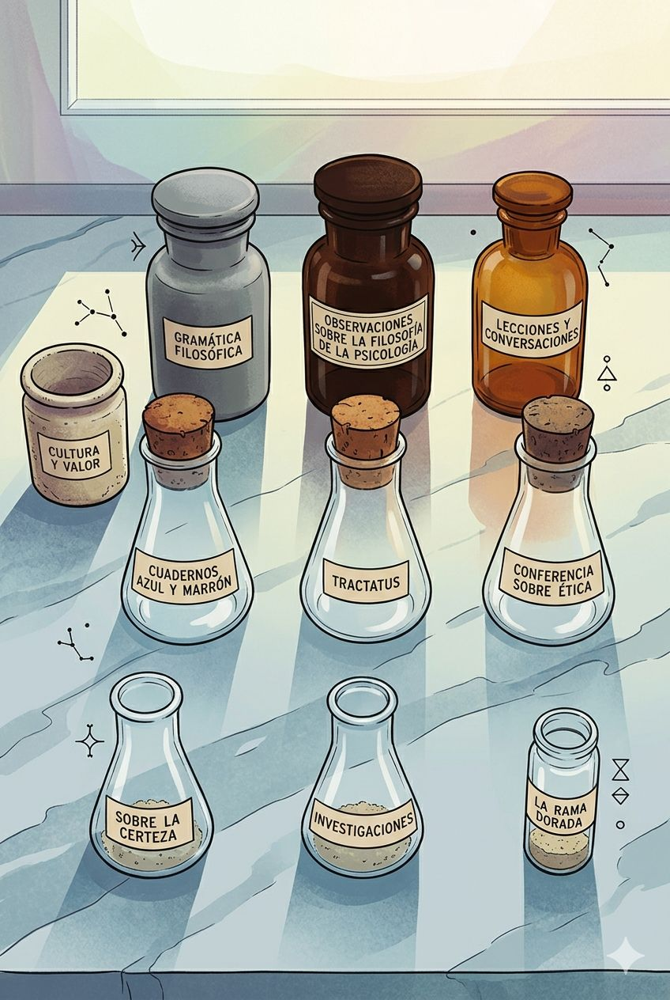
La filosofía de Wittgenstein es el equivalente verbal de un instrumento de medición: sin decoración, sin margen de error, construida para que la imprecisión sea visible —y ese espíritu pide vidrio, acero y luz fría.
Wittgenstein diseñó una casa en Viena con proporciones tan exactas que hizo levantar el techo terminado tres centímetros para que coincidiera con sus cálculos —esa obsesión arquitectónica pide una imagen que tenga la misma frialdad mineral y la misma precisión absoluta.
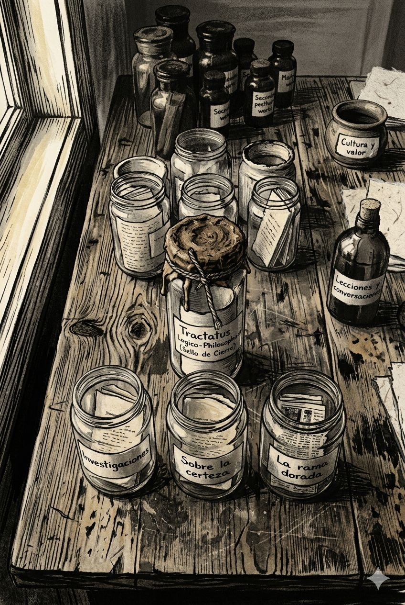
Wittgenstein pasó temporadas en una cabaña en Noruega, solo, trabajando sin más herramientas que el pensamiento y el cuaderno —ese ascetismo radical pide una imagen sin concesiones estéticas: la cosa en sí, sin decoración.
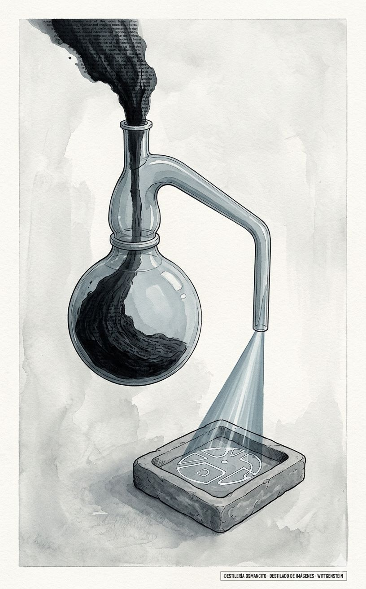
El filósofo que pasó su vida señalando los límites de lo que puede decirse produce, al destilarse en imágenes, una serie construida casi enteramente de ausencias: una línea que no se cierra, una frase que se interrumpe a mitad, un recipiente que contiene más de lo que cabe. Lo visual que emerge del Tamizado no ilustra el pensamiento de Wittgenstein —lo repite en otro registro. Eso no era predecible.
Número declarado: 6 imágenes.
El tamizado identificó seis zonas con densidad visual genuinamente distinta y no intercambiable: la paradoja del sistema que se anula (Tractatus), el manuscrito entregado a mitad de frase (Sobre la certeza), el texto pequeño que contiene más de lo que físicamente cabe (La rama dorada), la coexistencia de lógica y urgencia bélica (Cuadernos 1914–1916), la imagen central del método —la salida del laberinto (Investigaciones)— y el hallazgo sistémico de la cata entera: el norte estructuralmente incompatible con la terminación.
Por encima de seis, las imágenes empezarían a confirmar en lugar de revelar. Por debajo, alguna de estas zonas quedaría sin encarnar. El número es seis.
Estilo 1 — Grabado seco vienés Punta seca sobre papel verjurado, sin grises intermedios salvo los producidos por entrecruzamiento de líneas, geometría arquitectónica rigurosa sin ornamento. Por qué lo merece: Wittgenstein diseñó una casa en Viena con proporciones tan exactas que hizo levantar el techo terminado tres centímetros; ese rigor sin concesión estética es la textura visual de su pensamiento.
Estilo 2 — Carboncillo nórdico Carboncillo sobre papel blanco frío, zonas de negro profundo y zonas de blanco puro que no se gradúan sino que se interrumpen, atmósfera invernal sin calidez. Por qué lo merece: Wittgenstein trabajó en una cabaña sola en Noruega durante años; la austeridad material de ese trabajo necesita un medio que no prometa más temperatura de la que hay.
Estilo 3 — Diagrama de instrumentos filosóficos Ilustración en tinta sobre papel cartográfico amarillento, estilo grabado científico alemán del siglo XIX, objetos representados en sección y en vista frontal simultáneamente como si fueran instrumentos catalogados. Por qué lo merece: El método de Wittgenstein no es metafórico —es instrumental; opera sobre el lenguaje con la misma precisión con que un óptico opera sobre una lente, y esa precisión pide el idioma de los instrumentos de precisión.
Estilo seleccionado como dominante: Grabado seco vienés. Establece la temperatura general del set —fría, arquitectónica, sin grises sentimentales. Los otros dos estilos se despliegan donde la temperatura del hallazgo específico los exige: Carboncillo nórdico para los momentos de mayor vulnerabilidad biográfica; Diagrama de instrumentos para los hallazgos donde el método se ve operar sobre sí mismo.
Distribución: - Grabado seco vienés: imágenes 1, 6 - Carboncillo nórdico: imágenes 2, 5 - Diagrama de instrumentos filosóficos: imágenes 3, 4
Paleta base del set: Negro humo (#1a1a18), blanco pergamino (#f4f0e6), gris piedra frío (#8e8e8a), ocre papel cartográfico (#c8b98a). Sin colores cálidos. Sin azules. El ocre aparece solo en los diagramas de instrumentos.
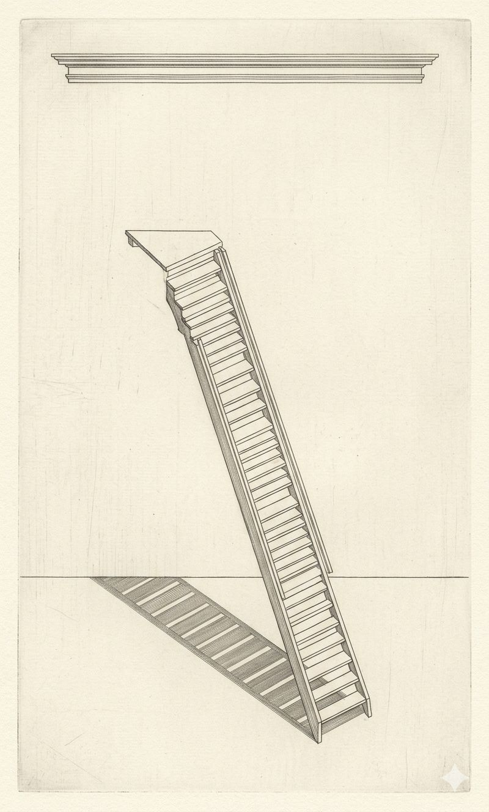
El Tractatus y su paradoja constitutiva: el sistema construye la escalera más precisa que la filosofía analítica ha producido para declarar, en su última proposición, que esa escalera debe arrojarse una vez subida. El tamizado identificó que el Tractatus llega al norte desde el este —y esa trayectoria es visualizable.
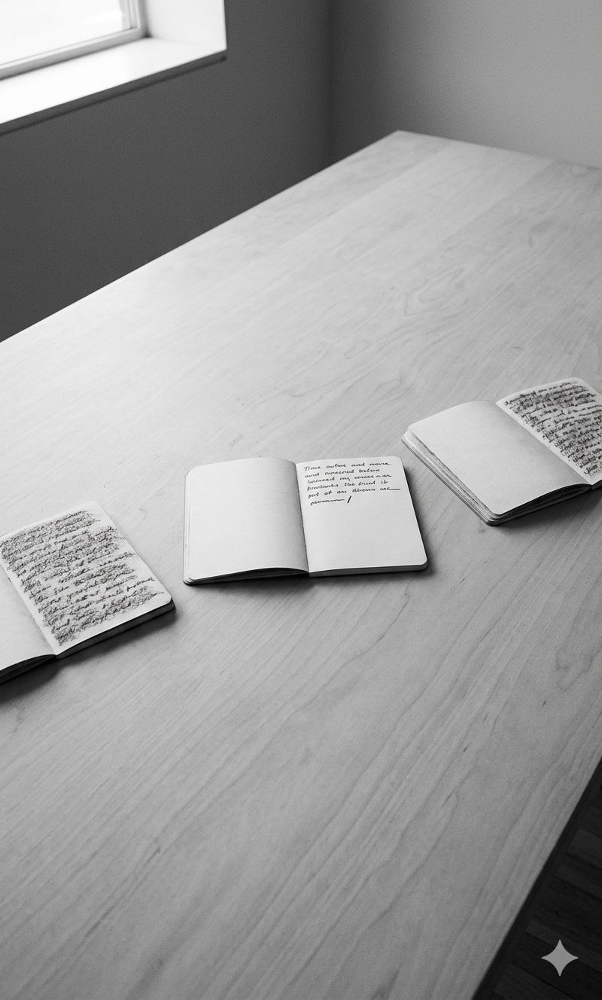
Sobre la certeza —los últimos tres cuadernos de Wittgenstein, entregados sin terminar. El tamizado señaló que al entregarlos sin completar, sin quererlo, los hizo más honestos que si los hubiera pulido. La interrupción a mitad de frase es el detalle que ninguna descripción verbal del corpus hace visible con suficiente peso.
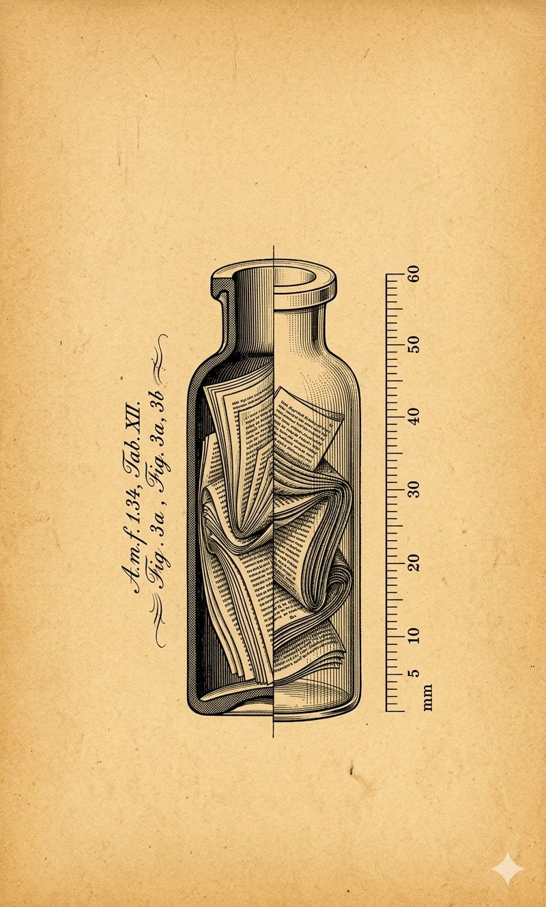
Las Observaciones sobre La rama dorada de Frazer —veinte páginas que la cata identificó como el texto secundario con mayor densidad filosófica de toda la obra. La imagen que ninguna descripción verbal predice: algo pequeño que contiene una cantidad imposible de precisión.
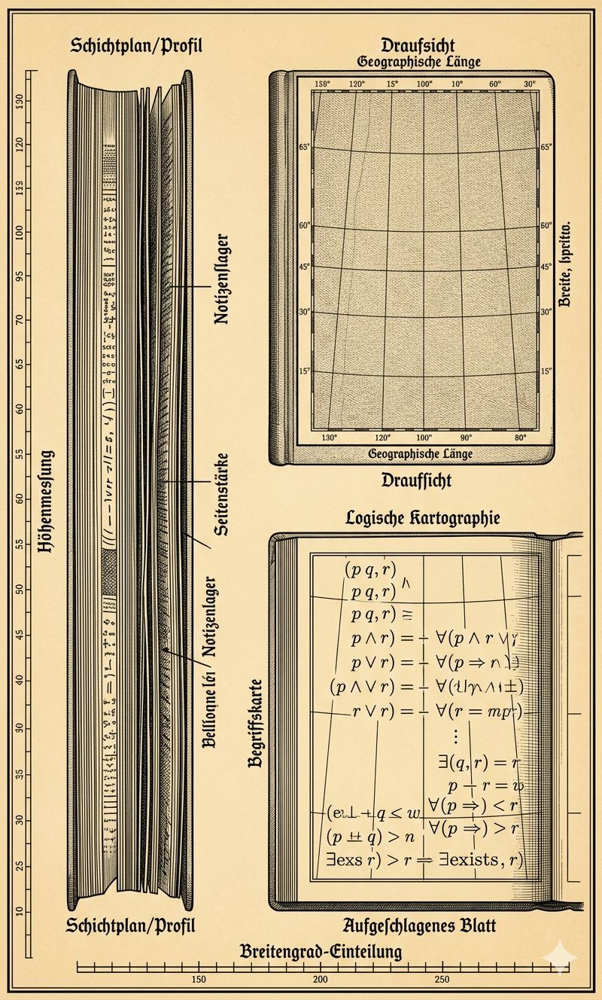
Los Cuadernos 1914–1916 —filosofía escrita en el frente del Este mientras se gestaba el Tractatus. El tamizado señaló que la urgencia de la guerra y la urgencia filosófica coexistían sin anularse. Esa coexistencia es el hallazgo visual: dos formas de medición operando sobre el mismo espacio al mismo tiempo.
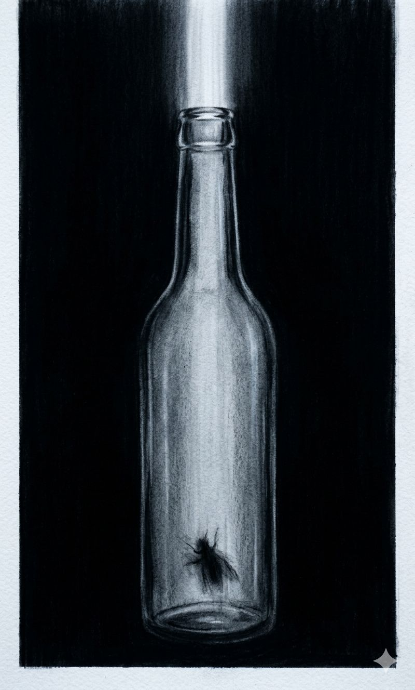
El método central de las Investigaciones filosóficas: mostrar al lector la salida del laberinto del lenguaje —no construir otro laberinto más elegante. La imagen de la mosca y la botella es la más célebre de Wittgenstein. La imagen que produce no es la mosca —es el momento de la apertura.
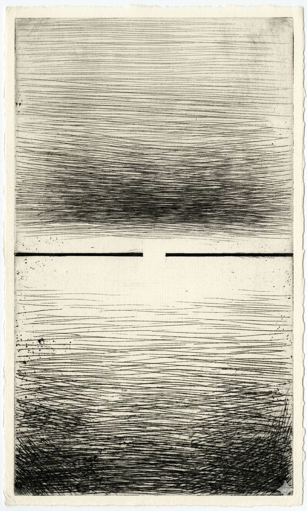
El hallazgo central de la cata entera: el norte de Wittgenstein era estructuralmente incompatible con la terminación. Sus textos más honestos son los que entregó sin completar. Esta imagen encarna ese hallazgo sistémico —no una obra específica sino lo que el conjunto reveló como unidad.